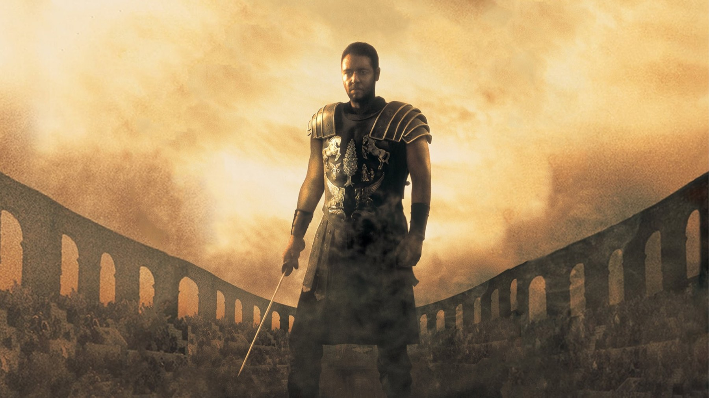

Massimo del Gladiatore è esistito? La storia vera (spoiler)
Il generale è un'invenzione, ma l'imperatore che combatte nell'arena sì: cosa c'è di vero su Commodo e su Marco Aurelio, con le fonti antiche
La parte più incredibile del Gladiatore, un imperatore che scende nell'arena a combattere, è la più vera di tutte. Massimo Decimo Meridio, il generale che diventa schiavo per vendicare la sua famiglia, non è mai esistito, mentre Commodo, il suo nemico, combatté davvero davanti a Roma intera. Qui separiamo ciò che Ridley Scott ha preso dalla storia da ciò che ha costruito da solo. Vi avvisiamo: più avanti si parla anche del finale.
Massimo non è esistito, ma qualcuno gli somiglia
Al generale di Russell Crowe somigliano due modelli: Spartaco, lo schiavo gladiatore che guidò la rivolta contro Roma, e Marco Nonio Macrino. Il secondo è il più interessante perché è reale e poco noto. Macrino era un senatore originario di Brescia, fu console suffetto nel 154 e consigliere di Marco Aurelio. La sua tomba fu scoperta nell'ottobre 2008 vicino a Roma e fu richiusa nel 2012.
La differenza con il film sta tutta nella sorte. Macrino fece carriera e morì ricco, mentre Massimo perde la famiglia e finisce schiavo. Per noi del modello vero resta solo la vicinanza all'imperatore, e il bisogno di vendetta che regge il racconto è pura invenzione.
In Italia Massimo ha la voce di Luca Ward. Nella scena d'apertura, davanti alle legioni schierate in Germania, il generale ordina «Al mio segnale, scatenate l'inferno»: è la battuta più citata del film, e l'invenzione più pura del personaggio, perché nessun generale vero ha lasciato una frase così. Il Commodo di Phoenix parla invece con la voce di Francesco Bulckaen, e la direzione del doppiaggio è di Fiamma Izzo.

Marco Aurelio non fu ucciso dal figlio
Nel film Commodo soffoca il padre con un abbraccio e si prende l'impero. Nella realtà Marco Aurelio morì il 17 marzo 180 senza essere assassinato, a Vindobona oppure a Sirmium, perché le fonti non permettono di decidere. Anche il sogno del vecchio imperatore di restituire il potere al Senato e ripristinare la Repubblica non ha alcun fondamento storico.
C'è però una scelta vera, che gli storici ancora discutono. Marco rinunciò alla successione per adozione, quella dei cosiddetti Cinque buoni imperatori, e lasciò l'impero a suo figlio Commodo. Per questo, a nostro parere, il dramma reale è meno comodo di quello del cinema: nessun tradimento in una tenda, solo un padre che sceglie l'erede sbagliato.
La scena che vale il film: Commodo scende nell'arena
La scena che per noi regge meglio il confronto con la storia è quella in cui Commodo, con la corona d'alloro e il pollice alzato, decide da imperatore la sorte di un uomo nel Colosseo e poi scende lui stesso sulla sabbia. Non è una trovata di Scott: Commodo combatteva davvero nell'arena, come gladiatore di tipo secutor, e lo storico Erodiano lo giudicava indegno di un imperatore.
La testimonianza migliore è quella di Cassio Dione, senatore che nella Storia romana racconta di aver assistito a tutto di persona: «Ero presente io stesso e presi parte a tutto ciò che fu visto, ascoltato e detto». Dione scrive che Commodo si faceva pagare un milione di sesterzi al giorno dal fondo dei gladiatori. Gli spettacoli durarono quattordici giorni e nel primo, da solo, uccise cento orsi. Poi arrivarono una tigre e un ippopotamo, e alla fine un elefante.
Il dettaglio che ci colpisce di più riguarda il pubblico. Dione racconta che i senatori e i cavalieri dovevano essere sempre presenti e gridare ciò che l'imperatore ordinava, per esempio che Commodo era il signore e il primo, il più fortunato degli uomini (la traduzione è nostra, dall'inglese). Il Gladiatore mostra la folla che ama Massimo e ignora l'imperatore, mentre le fonti dicono una cosa più amara: la folla fu costretta ad acclamare il tiranno, e in tribuna c'era chi lo scrisse.
Come morì davvero Commodo
Nel film il duello finale si svolge nel Colosseo, con Massimo ferito che uccide l'imperatore davanti a tutta Roma. La realtà è diversa. Commodo fu assassinato il 31 dicembre 192, a 31 anni. Marcia, la sua concubina, scoprì il proprio nome su un elenco di condanne e tentò di avvelenarlo, ma lui vomitò il veleno. A quel punto i congiurati mandarono Narcisso, un lottatore che era il suo compagno di allenamento, e fu lui a strangolarlo. Le fonti divergono sul luogo: parlano di vasca da bagno oppure di letto.
Qui la storia ha un'ironia che il film non usa, perché l'imperatore che si esercitava per combattere nell'arena fu ucciso da chi lo aiutava ad allenarsi, e non da un eroe tragico. Il finale di Scott nasce da un bisogno drammatico e fa il suo lavoro da cinema, ma toglie al vero Commodo una morte più misera e più coerente con la sua vita.
La sorella di Commodo e il senatore che non c'era
Anche Lucilla è un personaggio reale, e il film la sposta lontano dalla sua vicenda. Era la sorella di Commodo: sposata prima con Lucio Vero, poi con Pompeiano, nel 182 organizzò una congiura contro di lui. Il piano fallì perché un parente del secondo marito dichiarò ad alta voce le proprie intenzioni prima di colpire. Commodo la mandò a Capri e lì la fece giustiziare nello stesso anno. Nel film, invece, Lucilla è viva e fa da ponte tra il Senato e Massimo.
Il senatore Gracco, interpretato da Derek Jacobi, è inventato. Nel racconto il Senato è il luogo della dignità e della resistenza al tiranno. Per le fonti antiche, invece, i senatori erano il pubblico costretto ad applaudire Commodo, quindi una storia di servilismo diventa qui una favola di resistenza.
I numeri e il set, in un solo paragrafo
Commodo nacque il 31 agosto 161 a Lanuvio e fu imperatore insieme al padre dal 177, a 16 anni, poi da solo dal 17 marzo 180. Il film uscì negli Stati Uniti il 5 maggio 2000 e in Italia il 19 maggio. Costò 103 milioni di dollari, debuttò con 34,8 milioni e superò i 466 milioni nel mondo. Su dodici candidature vinse cinque Oscar: miglior film e miglior attore a Crowe, poi i premi per i costumi e per il sonoro, più quello per gli effetti visivi. Le riprese andarono da gennaio a maggio 1999 tra l'Inghilterra e il Marocco, poi a Malta e in Val d'Orcia. Il 2 maggio 1999 morì Oliver Reed, il Proximo del film, prima di aver finito le sue scene, e il suo volto fu completato in digitale.
Le bugie funzionano, e il film lo sa
Per noi il Gladiatore sbaglia molto sul piano storico e azzecca molto su quello del cinema. Inventa il generale perché il pubblico ha bisogno di qualcuno da amare, ma lascia vero l'imperatore, e il Commodo di Phoenix è credibile proprio perché l'originale era più folle di qualsiasi sceneggiatura. Il punto debole è Marco Aurelio. La scena del tradimento fa del padre un santo e del figlio un parricida, mentre la storia pone una domanda più scomoda: perché un imperatore filosofo consegnò Roma a un figlio come Commodo? Il secondo difetto è il Senato, trasformato in un gruppo di resistenti quando le fonti lo descrivono come una comparsa obbligata dell'imperatore.
A chi lo consigliamo e dove vederlo
Lo consigliamo a chi lo ha visto da ragazzo e vuole sapere cosa c'era sotto. Va bene anche a chi non lo ha mai visto e lo prende come un film di vendetta con un grande cattivo, perché il vero e il falso non ne rovinano il piacere. Non lo consigliamo a chi cerca una lezione di storia. Dura 155 minuti e a novembre 2026 è in abbonamento su Amazon Prime Video e Sky Go, oltre che su Now TV, mentre in noleggio si trova su Apple TV e su Chili. Poiché i cataloghi cambiano spesso, conviene controllare prima di abbonarsi.
Lo stesso controllo sulle fonti lo abbiamo fatto per altre battute famose del cinema: «Pulp Fiction, Ezechiele 25:17: è nella Bibbia?» e «Blade Runner, lacrime nella pioggia».
Massimo non è mai esistito, ma l'imperatore che combatte nell'arena è vero: il film vince quando racconta Commodo e perde quando riscrive Marco Aurelio.
Domande frequenti
Massimo Decimo Meridio è esistito davvero?
Non è mai esistito, perché è un personaggio inventato. Gli somigliano Spartaco e Marco Nonio Macrino, un senatore di Brescia che fu console nel 154 e consigliere di Marco Aurelio.
Commodo morì nell'arena come nel film?
Morì in modo diverso: fu ucciso il 31 dicembre 192 a 31 anni, dopo un tentativo di avvelenamento fallito, quando i congiurati mandarono il lottatore Narcisso a strangolarlo.
Marco Aurelio fu ucciso dal figlio?
Morì il 17 marzo 180, a Vindobona o a Sirmium, senza essere assassinato. Il suo desiderio di restituire la Repubblica a Roma non ha alcuna base storica.
Dove vedere Il gladiatore in Italia?
A novembre 2026 risulta in abbonamento su Amazon Prime Video e Sky Go, oltre che su Now TV. In noleggio si trova su Apple TV e su Chili, ma i cataloghi cambiano spesso.
Fonti consultate (11)
- Wikipedia – Gladiator (2000 film)
- Wikipedia – Commodus
- Wikipedia – Marcus Aurelius
- Wikipedia – Marcus Nonius Macrinus
- Wikipedia – Narcissus (wrestler)
- Wikipedia – Lucilla
- Cassio Dione, Storia romana, libro 73 (LacusCurtius, Università di Chicago)
- Sky TG24 – Il Gladiatore, le frasi più famose
- Wikipedia – Il gladiatore (doppiaggio italiano)
- Popcorn TV – Il gladiatore, frasi e doppiatore
- TMDB – scheda e dove vederlo in Italia